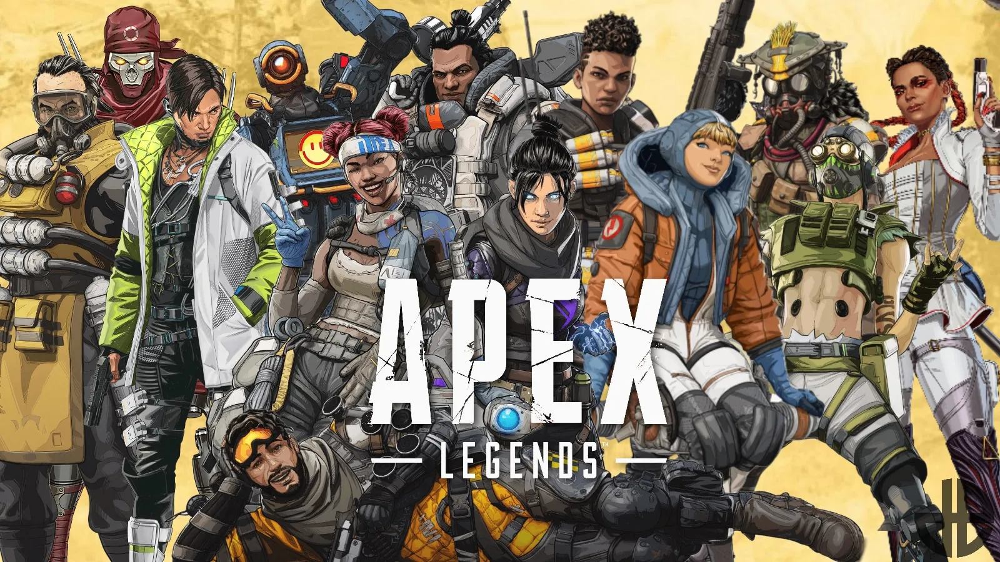

Fortnite is a survival game where 100 players fight against each other in player versus player combat to be the last one standing. It is a fast-paced, action-packed game, not unlike The Hunger Games, where strategic thinking is a must in order to survive. There are an estimated 125 million players on Fortnite.

Call of Duty Warzone is the second main battle royale installment in the Call of Duty franchise, following the "Blackout" mode of Call of Duty: Black Ops 4. Warzone differs from Black Ops 4 by reducing reliance on equipable gadgets and instead encouraging the accumulation of a new in-game currency called "Cash". The game supports up to 150 players in a single match, which exceeds the typical "100 players" size that is seen in other battle royale titles.
Apex Legends is an online multiplayer battle royale game featuring squads of three players using pre-made characters with distinctive abilities, called "Legends", similar to those of hero shooters. Alternate modes have been introduced allowing for single and for two-player squads since the game's release.